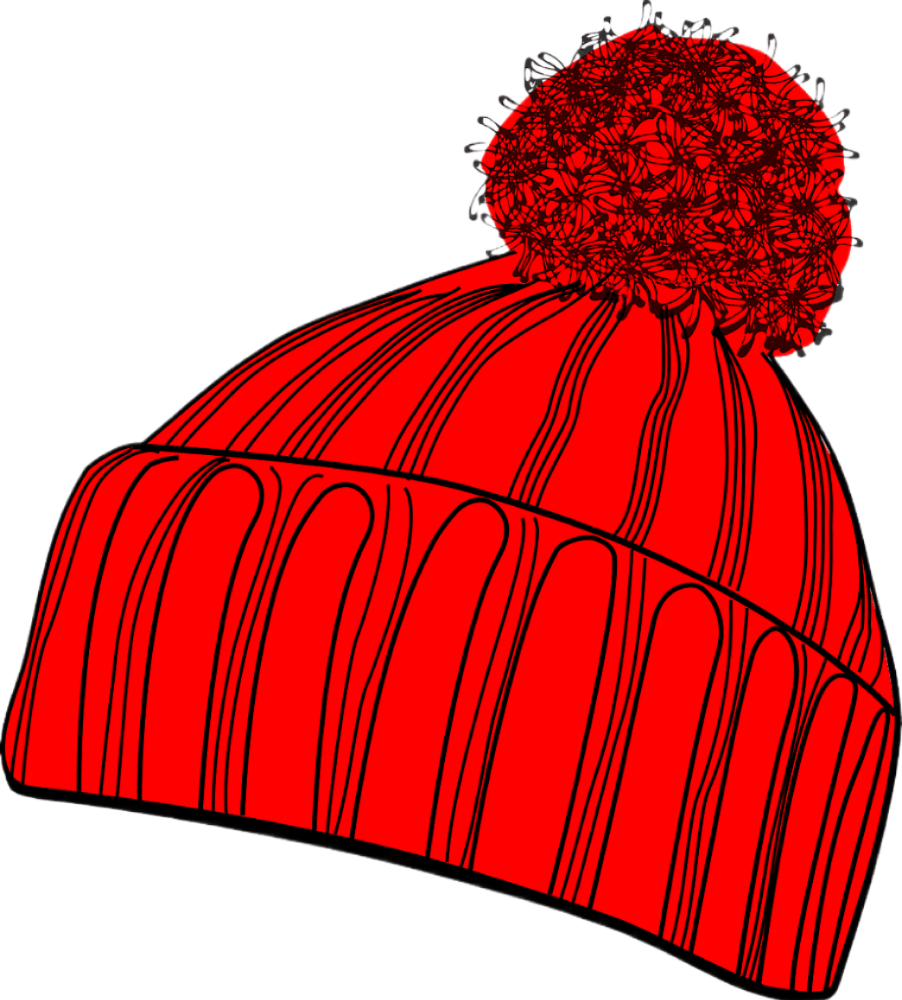

A importância das Doações


Qual a importância de doar? Doar é um ato de generosidade. A prática da doação vai além de simplesmente oferecer recursos materiais: ela fortalece os laços comunitários, promove a solidariedade e cria um ambiente de empatia e cooperação, além de ajudar os mais necessitados
Quais são os benefícios da doação? Por meio das doações, é possível oferecer acesso à educação, saúde, alimentação e abrigo, suprindo necessidades básicas que muitas vezes são negadas a essas pessoas. Além disso, a doação fortalece instituições que trabalham para o bem-estar coletivo, como organizações não governamentais e projetos sociais.
Qual é o propósito das doações? As doações são frequentemente feitas para apoiar causas humanitárias, como assistência a desastres naturais, pesquisa médica, educação, combate à pobreza, entre outros.
Quais são os tipos de doações? Doação Voluntária ou Espontânea: É feita por pessoas com objetivo de manter o estoque de sangue do Hemocentro. O doador não apresenta nome do paciente.
Doação de Reposição: É a doação para um determinado paciente que já recebeu ou deverá receber a transfusão. É preciso informar no momento do cadastro, na recepção, o nome do paciente e do Hospital onde ela está ou será internado.
Doação Autóloga (auto doação): Realizada pelo paciente para o seu próprio uso. Esses casos devem ter indicação médica.